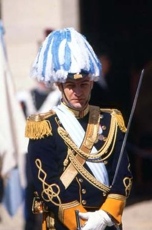
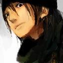

Forums galactiques > Taverne galactique : lieu de discussion informel > IZakaYa - L'alcool encore et toujours...
Pages : 1 2 ... 289 290 291 ... 308 309
| NiCo Réputation à la taverne : 9  19/04 ETU 08:00 | Score : 0 Détails attendez mademoiselle. . . ne vous inquiétez pas, il est un peu énervé, vous vouliez un verre d'eau ???
NiCo alla chercher un verre d'eau et le donna a la demoiselle et il alla chercher sa grenadine puis je m'asseoir à vos côté si il vous plaît !?! demanda Nico qui était visiblement amoureux ! | ||
| Scub Coral Réputation à la taverne : 21 19/04 ETU 22:29 | Score : 0 Détails Coral regarda NiCo avec attention.
Non, tu n'es pas aveugle, pourtant. Je me contente de ce que Galactor m'a donné, mais vous pouvez prendre l'autre breuvage si vous voulez. Aurevoir! Elle se leva avec grâce et sortit de l'Izakaya, son sourire toujours figé sur son visage. | ||
| Thomas d'Andorre Réputation à la taverne : 3  19/04 ETU 22:39 | Score : 2 Détails Ouf tu t'est fait violemment recaler mon pote!
| ||
| Ookamimaru Réputation à la taverne : 129  19/04 ETU 23:25 | Score : 2 Détails J'ai soif, et j'ai envi de dire une connerie...
Alors... un pastis siouplé ! Et... hum... Pour la connerie... que pensez vous de cette superbe question ? "Quelqu'un ici a-t-il internet ?" Oula... ouais, ok... Passez moi plutot à boire, ça m'évitera de dire trop de bêtises... | ||
| N'Tyrr Réputation à la taverne : 299  19/04 ETU 23:49 | Score : 0 Détails Long fut le chemin parcouru, la vaste galaxie dévoila peu à peu ses mystères. Révélant des trésors oublier de tous. C’est au fils de ses rencontres, auprès de gens inconnus, qui parfois ne possédaient qu’à peine la technologie du moteur à explosion, qu’N’Tyr s’émerveilla à la richesse, par leur compréhension sans égal, de leur environnement. Mais elle était également en joie de retrouver la mythique taverne Izakaya ainsi que ses occupants. Beaucoup d’eau avait coulé sous les ponts depuis son départ. Elle s’approcha du comptoir, attendant patiemment le serveur. Tout en observant la salle, afin de croiser le regard d’un commandant assez aimable pour entamer une conversation.
| ||
| NiCo Réputation à la taverne : 9 20/04 ETU 06:57 | Score : 0 Détails NiCo regarda l'entrée depuis que Coral était partit... cela fesait déja 2h30 qu'il n'avait pas bougé !!!!!!! il avait les larmes au yeux... il était encore jeune et c'était la première fois qu il c était fait recaler comme cela
| ||
| Estrielle Réputation à la taverne : 157  20/04 ETU 21:30 | Score : 0 Détails Depuis la mort de Grabeuh, l'un des responsables de ce bar, je souhaiterai apporter du soutien financier à ce bar pour qu'il puisse continuer de vivre par ces boissons, et animations.
J'espère que Araskel n'a pas abandonné sa gestion. | ||
| N'Tyrr Réputation à la taverne : 299 22/04 ETU 00:01 | Score : 0 Détails Après quelques heures d’attente, une décision fut prise.
Celle d’aller se servir tous seul derrière le bar… Rien à gauche… personne à droite… Par ici la bouteille d’astro-pastis!!! | ||
| roomi Réputation à la taverne : 158  22/04 ETU 00:12 | Score : 0 Détails L'on entendit une porte claquée ,et roomi aparut dans l'entrée.
Hum...fragile cette porte ,ou c'est moi qui gonfle? Le sourire jusqu'aux oreilles ,il s'approcha du comptoir.Il se retourna pour faire face à la clientèle et cria un coup sur les poches de l'iza: Salut les Eponges HA! HA! HA! CA BEIGNE? Vers le comptoir : Bonsoir n'tyrr ,ça va? Bon ben si il n'y a personne ,allons-y.Je me serre une double limo tiens! | ||
| N'Tyrr Réputation à la taverne : 299 22/04 ETU 01:08 | Score : 0 Détails Bonsoir Roomi,
comme vous pouvez le constater, à cette heure la plupart des gens sont entrain de jouer au golf dans les toilettes. D’autre on même assurer y voir un dieu ressemblant vaguement à un canard, là bas… Une limonade alors? | ||
| Araskel Réputation à la taverne : 396  22/04 ETU 09:50 | Score : 0 Détails "Merci de votre soutien a tout epreuve commandante Estrielle! Je suis de retour, apres une legere absence dû a une visite sur la planete fetehalcolisé qui s'est prolongé toutes la semaine..."
| ||
| Pikachu Réputation à la taverne : 30 22/04 ETU 10:46 | Score : 0 Détails Quelqu'un pourrait il me servir une Pokéboisson?
Vous en avez j'espére? Comment ça non? Pika,pika! Dit le pikachu surpris Cette galaxie n'est plus ce qu'elle était... | ||
| roomi Réputation à la taverne : 158 22/04 ETU 11:20 | Score : 0 Détails oui! j'adore les bulles.
C'est qu'ils sont un peu sur une drole de planètes les gens ici ou c'est moi. | ||
| N'Tyrr Réputation à la taverne : 299 22/04 ETU 11:25 | Score : 0 Détails Une autre planète où la gravitation exerce une forte pression. Le monde tourne plus vite aussi, on le ressent plus facilement c'est pour ça que la nausée arrive plus rapidement.
Vous voulez y faire un tour? | ||
| roomi Réputation à la taverne : 158 22/04 ETU 11:36 | Score : 0 Détails Je suis toujours prét pour decouvrir quoi que ce soit !
Par contre ,pour ce qui est des hauts le coeur ,je prefère quand ils sont dut à quelques semaines d'entrainements en stations spatiales plutot qu'a des breuvages qui tordent l'estomac. t'es aussi observatrice que moi ,tu veux une fois de plus me remettre dans la dure réalitée que je nie ,soit. Parles moi un peu de tes dernières decouvertes ,cela m'interresse . J'aimais bien avant que je me disperce dans les batailles essayer d'accrocher les hautes sphères de ton esprit. | ||
| N'Tyrr Réputation à la taverne : 299 23/04 ETU 12:09 | Score : 1 Détails Parachutée dans un monde incompatible avec ce à quoi j’aspire.
J’ai décidée d’errer au lieu de rentrer dans les rangs. J’ai donc parcourue la galaxie, croisant des populations qui ne parlent pas de profit, qui vive en symbiose avec les éléments, acceptant la différence. Là j’ai compris que le monde rêver pourrais un jour exister partout. Des enfants m’ont appris à exister, par leurs simplicités, ils m’ont montré l’école de la vie. Voilà le voyage que j’ai fait. | ||
| Inetu Réputation à la taverne : 4  23/04 ETU 13:51 | Score : 0 Détails Inetu vint se caler au bar de l'Izakaya, tenant dans ses mains une boite de cigarette. Il y glissa furtivement sa main et en retira un objet blanc allongé qu'il mit entre ses lèvres. Il semblait chercher quelque chose dans ses poches qu'il ne trouva qu'au bout de quelques minutes, il alluma sa cigarette et se commanda un verre de bière irlandaise en attendant quelconque compagnie.
| ||
| roomi Réputation à la taverne : 158 24/04 ETU 14:53 | Score : 0 Détails Quel plaisir d'en aprendre des petits ,moi meme suis trés protecteur...
Par contre ,chez nous ils sont trés malins les gamins ,chaque forfait est plus vil que le prédédent...mais bon ,je legue des responsabilités ,ça leur plait et ils se sentent responsable trés tot. Je suis pas dur jusqu'a ce qu'ils deviennent des hommes ,aprés le code des pirates s'applique pour toute la communauté. | ||
| galactor Réputation à la taverne : 307  24/04 ETU 20:03 | Score : 1 Détails Les portes de L'izaKaya s'ouvrerent en un eclair ! Un personnage entra en trombe, furtant dans tous les recoins de ce mythique lieu.
Ce n'est était autre que Galactor, pointant son nez a toutes les tables, scrutant le comptoir, il alla meme jusqu'a fouiller les Chambres de l'étage. Il avait l'air stressé et de toute evidence pressé, cependant un sourire paisible ne voulait disparaitre de son visage . Ne trouvant point ce qu'il cherchait, il se jeta au cou d'Araskel et lui hurla Ouuuuuu ESSSST ELLLLLLLLLE ?!? Je sais qu'elle doit etre dans les environs ! Allez dis le moi ! Puis il reprit finalement son calme. Il defroissa la veste du serveur, s'excusant vaguement de sa réaction et s'assit asur son petit tabouret, devant son bout de comptoir habituel. Pfff de toute façon, elle finira bien par se montrer d'elle meme. Un Astro-Pastis S't'euplait Araskel ! | ||
| Araskel Réputation à la taverne : 396 25/04 ETU 22:03 | Score : 1 Détails Apres avoir essuyé sa veste salopée par Galactor, Araskel posa le sempiternelle litron d'astro pastis devant la machoire affaisée de Galactor, et commenca a lavé des verres tout en lui parlant:
Confortable tes deux systemes...je m'y plait...Sinon qui va bien finir par se montrée d'elle meme?? ta cirrhose?" Dit il, en reculant legerement, par prudence..." |
Pages : 1 2 ... 289 290 291 ... 308 309
Forums galactiques > Taverne galactique : lieu de discussion informel > IZakaYa - L'alcool encore et toujours...